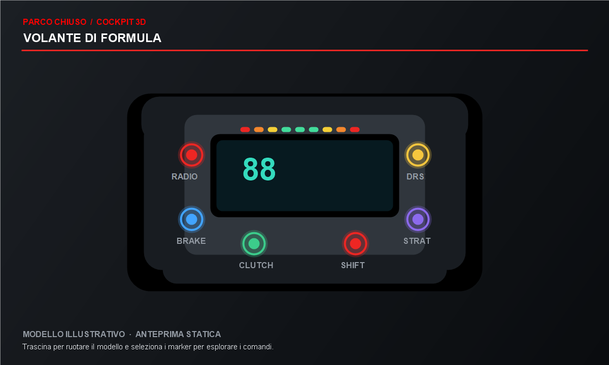
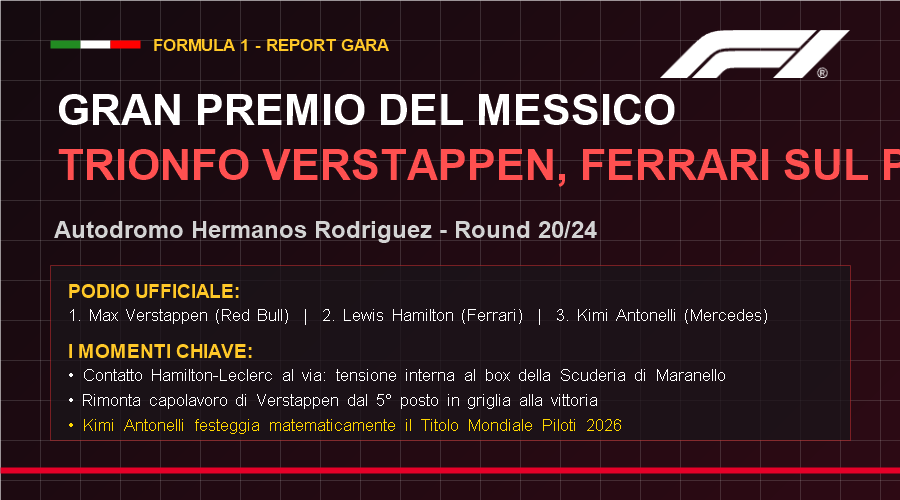
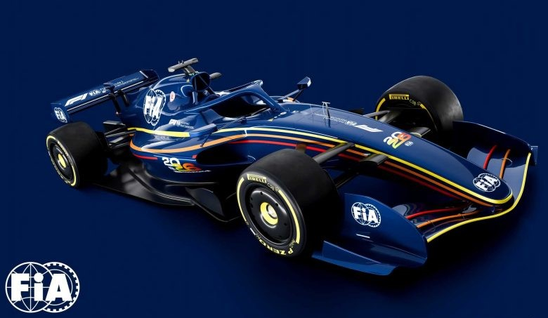
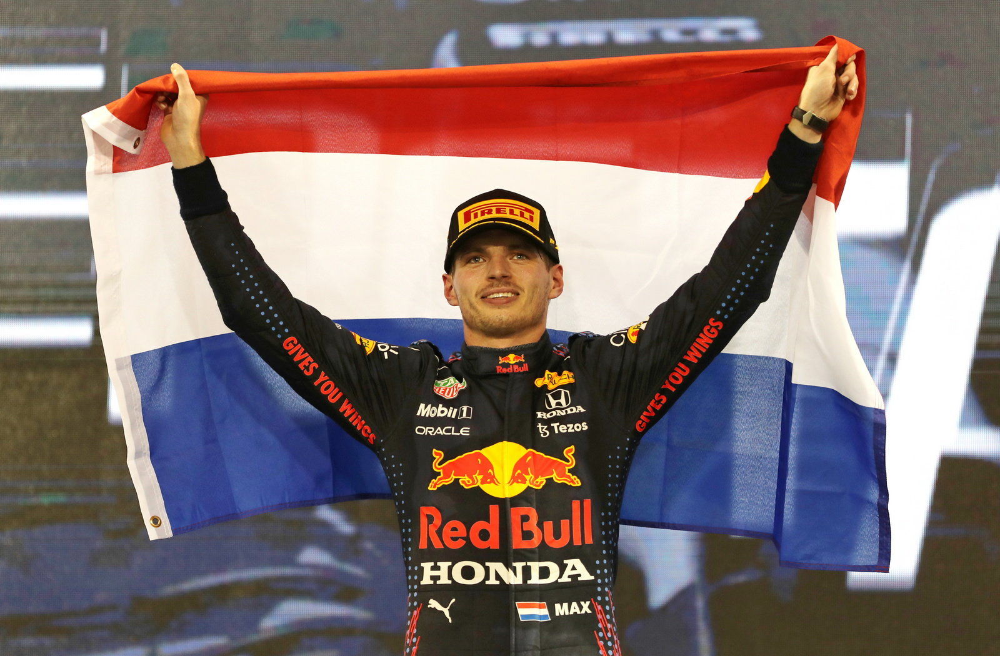

ANALISI · GP DEL MESSICO
Il ritmo che non ti aspetti: cosa è successo davvero in gara
Antonelli entra nella storia: il GP del Messico consegna all'Italia un nuovo campione del mondo.
Antonelli entra nella storia: il GP del Messico consegna all'Italia un nuovo campione del mondo.
Ruotalo per esplorare i comandi: seleziona un indicatore oppure passa su un pulsante per scoprirne la funzione in gara.

Anteprima statica del volante. Il modello 3D non è disponibile in questo browser.
Le disposizioni e le funzioni dei comandi cambiano tra squadre e regolamenti. Questo volante è un modello didattico generico, non la replica di un componente ufficiale.

Il terzo posto in Messico vale il titolo iridato con quattro gare d'anticipo.

Le nuove monoposto e le soluzioni che stanno ridefinendo la guida.

Le gare che hanno trasformato una bandiera a scacchi in leggenda.
| POS | PILOTA | SCUDERIA | PT |
|---|---|---|---|
| 1 | A. K. Antonelli | Mercedes | 380 |
| 2 | M. Verstappen | Red Bull | 261 |
| 3 | L. Hamilton | Ferrari | 259 |
| 4 | G. Russell | Mercedes | 250 |
| 5 | C. Leclerc | Ferrari | 245 |